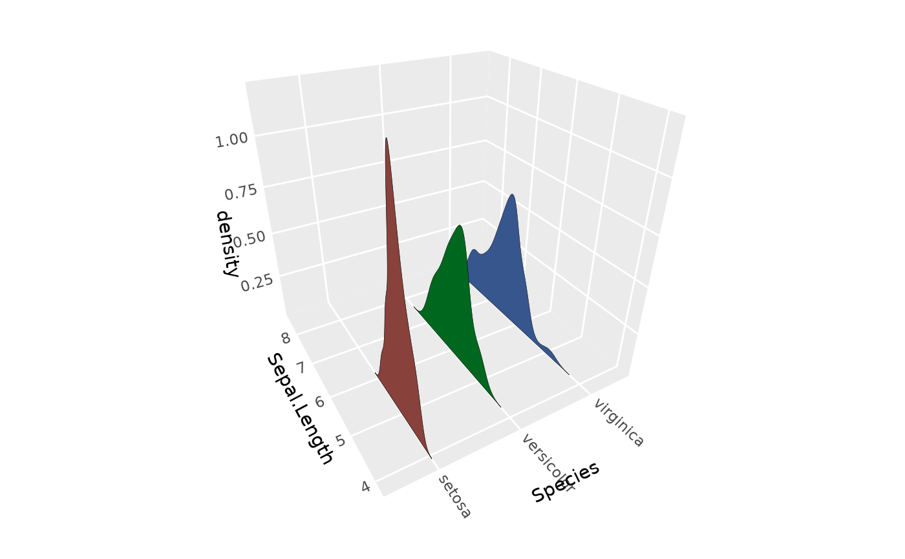
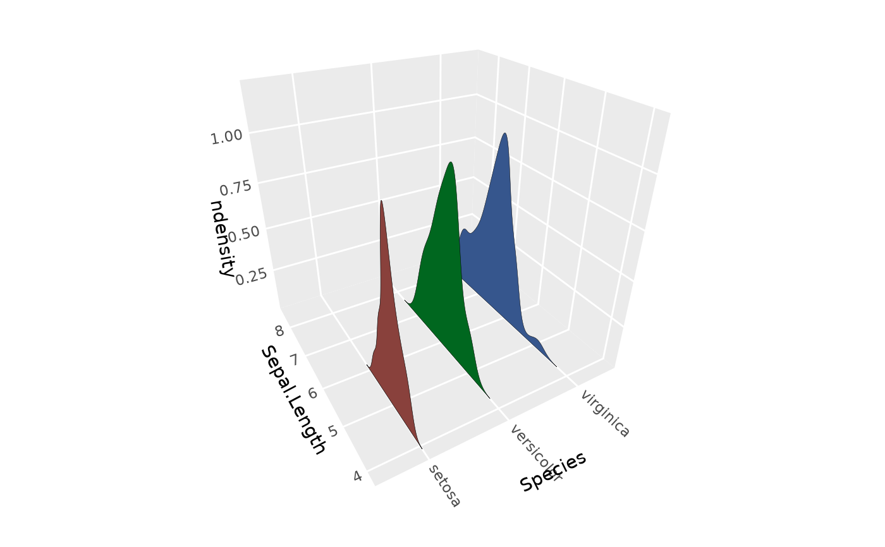
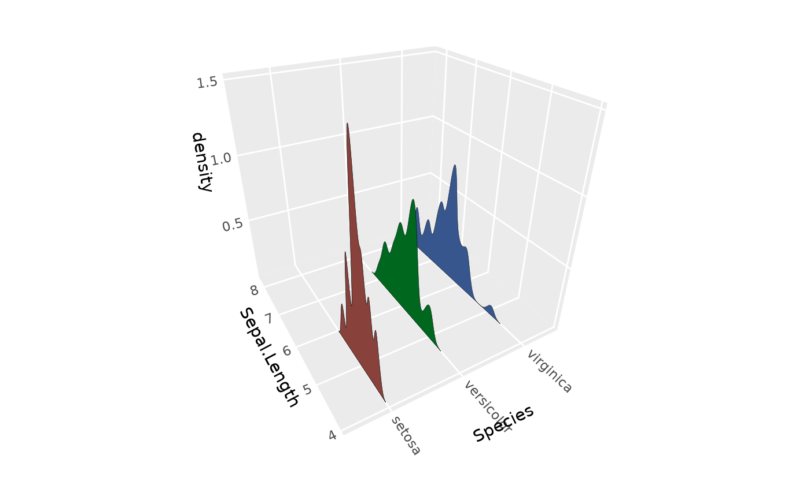
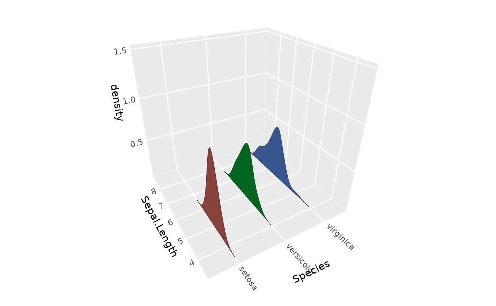
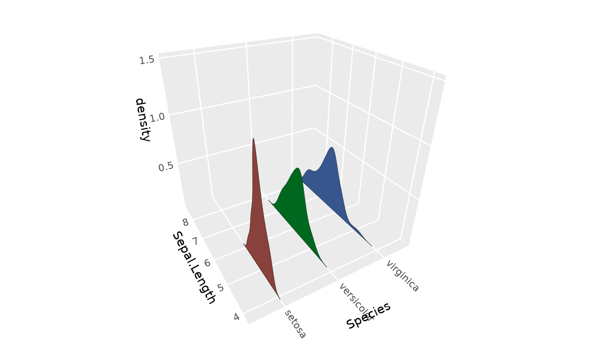
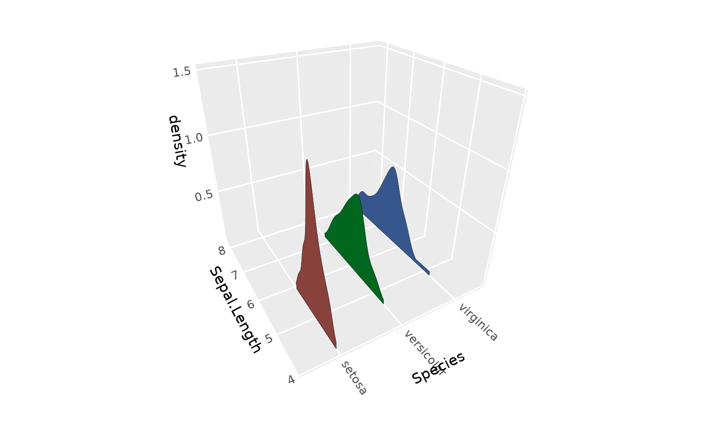
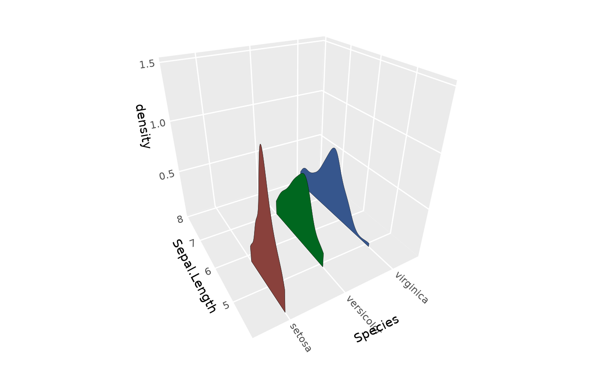
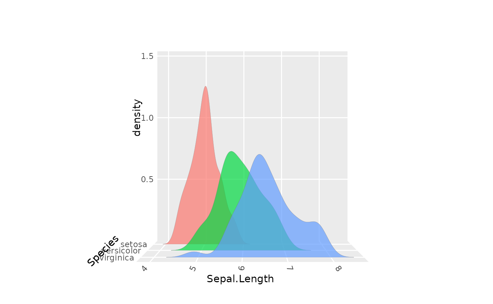

Computes 1D kernel density estimates for each group and arranges them as
ridgeline polygons in 3D space. Similar to ggridges::geom_density_ridges(),
but rendered as 3D surfaces using geom_ridgeline_3d().
Usage
stat_distributions_3d(
mapping = NULL,
data = NULL,
geom = "ridgeline_3d",
position = "identity",
...,
direction = NULL,
bw = "nrd0",
adjust = 1,
kernel = "gaussian",
n = 512,
trim = FALSE,
bounds = c(-Inf, Inf),
rel_min_height = 0,
joint_bandwidth = FALSE,
base = 0,
light = NULL,
cull_backfaces = FALSE,
sort_method = NULL,
scale_depth = TRUE,
force_convex = FALSE,
na.rm = FALSE,
show.legend = NA,
inherit.aes = TRUE
)
geom_distributions_3d(
mapping = NULL,
data = NULL,
stat = "distributions_3d",
position = "identity",
...,
direction = NULL,
bw = "nrd0",
adjust = 1,
kernel = "gaussian",
n = 512,
trim = FALSE,
bounds = c(-Inf, Inf),
rel_min_height = 0,
joint_bandwidth = FALSE,
base = 0,
light = NULL,
cull_backfaces = FALSE,
sort_method = NULL,
scale_depth = TRUE,
force_convex = FALSE,
na.rm = FALSE,
show.legend = NA,
inherit.aes = TRUE
)Arguments
- mapping
Set of aesthetic mappings created by
aes(). This stat requiresxandyaesthetics. One of these serves as the grouping/position variable (determined bydirection), and the other provides values for density estimation.- data
The data to be displayed in this layer.
- geom
The geometric object to use to display the data. Defaults to
geom_ridgeline_3d().- position
Position adjustment, defaults to "identity". To collapse the result onto one 2D surface, use
position_on_face().- ...
Other arguments passed to the layer.
- direction
Direction of ridges:
- "x"
One ridge per unique x value; ridge varies in y (default)
- "y"
One ridge per unique y value; ridge varies in x
- bw
The smoothing bandwidth to be used. If numeric, the standard deviation of the smoothing kernel. If character, a rule to choose the bandwidth, as listed in
stats::bw.nrd(). Options include"nrd0"(default),"nrd","ucv","bcv","SJ","SJ-ste", and"SJ-dpi". Note thatautomatic calculation is performed per-group unless
joint_bandwidth = TRUE.- adjust
A multiplicative bandwidth adjustment. This makes it possible to adjust the bandwidth while still using a bandwidth estimator. For example,
adjust = 1/2means use half of the default bandwidth. Default is 1.- kernel
Kernel function to use. One of
"gaussian"(default),"rectangular","triangular","epanechnikov","biweight","cosine", or"optcosine". Seestats::density()for details.- n
Number of equally spaced points at which the density is estimated. Should be a power of two for efficiency. Default is 512.
- trim
If
FALSE(the default), each density is computed on the full range of the data (extended by a factor based on bandwidth). IfTRUE, each density is computed over the range of that group only.- bounds
A numeric vector of length 2 giving the lower and upper bounds for bounded density estimation. Density values outside bounds are set to zero. Data points outside bounds are removed with a warning. Default is
c(-Inf, Inf)(unbounded).- rel_min_height
Lines with heights below this cutoff will be removed. The cutoff is measured relative to the maximum height within each group. For example,
rel_min_height = 0.01removes points with density less than 1% of the peak. Default is 0 (no removal). This is similar to the parameter of the same name inggridges::geom_density_ridges().- joint_bandwidth
If
TRUE, bandwidth is computed jointly across all groups using the specifiedbwmethod, ensuring consistent smoothing across all density curves. This matches the behavior ofggridges::stat_density_ridges(). IfFALSE(the default), bandwidth is computed separately for each group, matchingggplot2::stat_density(). Only applies whenbwis a character string (bandwidth rule), not whenbwis provided as a numeric value.- base
Z-value for ridge polygon bottoms. If NULL, uses min(z).
- light
A lighting specification object created by
light(),"none"to disable lighting, orNULLto inherit plot-level lighting specs from the coord. Specify plot-level lighting incoord_3d()and layer-specific lighting ingeom_*3d()functions.- cull_backfaces, sort_method, force_convex, scale_depth
Advanced polygon rendering parameters. See polygon_rendering for details.
- na.rm
If
FALSE, missing values are removed.- show.legend
Logical indicating whether this layer should be included in legends.
- inherit.aes
If
FALSE, overrides the default aesthetics.
Details
This stat is modeled after ggplot2::stat_density(), with similar
parametrization for bandwidth selection, kernel choice, and boundary handling.
Aesthetics
stat_distributions_3d() understands the following aesthetics (required
aesthetics are in bold):
- x
X coordinate - either density variable or position variable depending on
direction- y
Y coordinate - either position variable or density variable depending on
direction- group
Grouping variable (typically derived from the position aesthetic)
- fill, colour, alpha, linewidth, linetype
Passed to
geom_ridgeline_3d()
Direction
The direction parameter determines how the data is interpreted:
direction = NULL(default)Automatically detects direction based on whether
xoryis discrete (factor/character). Ifxis discrete andyis continuous, uses"x"; ifyis discrete andxis continuous, uses"y". Falls back to"x"if ambiguous.direction = "x"Ridges march along the x-axis. Each unique x value defines a group, and density is computed from the y values within that group. The resulting density curves lie in the y-z plane.
direction = "y"Ridges march along the y-axis. Each unique y value defines a group, and density is computed from the x values. The resulting density curves lie in the x-z plane.
Computed variables
The following variables are computed and available via after_stat():
- density
The kernel density estimate at each point
- ndensity
Density normalized to a maximum of 1 within each group
- count
Density multiplied by number of observations (expected count)
- n
Number of observations in the group
- bw
Bandwidth actually used for this group
See also
geom_ridgeline_3d() for rendering pre-computed ridgeline data,
stat_density_3d() for 2D kernel density surfaces,
ggplot2::stat_density() for the parametrization this stat follows,
ggridges::geom_density_ridges() for the 2D ridgeline equivalent
Examples
library(ggplot2)
# Basic usage with iris data
p <- ggplot(iris, aes(y = Sepal.Length, x = Species, fill = Species)) +
coord_3d() +
scale_z_continuous(expand = expansion(mult = c(0, NA))) + # remove gap beneath ridges
theme(legend.position = "none")
p + stat_distributions_3d()

# Normalize max ridge heights
p + stat_distributions_3d(aes(z = after_stat(ndensity)))

# Adjust smoothing bandwidth
p + stat_distributions_3d(adjust = 0.5)

# Use joint bandwidth for consistent smoothing across groups
p + stat_distributions_3d(joint_bandwidth = TRUE)
#> Picking joint bandwidth of 0.274

# Different bandwidth selection rules
p + stat_distributions_3d(bw = "SJ")

# Remove tails with rel_min_height
p + stat_distributions_3d(rel_min_height = 0.05)

# Trim to data range
p + stat_distributions_3d(trim = TRUE)

# Rotated to reduce perspective distortion
p + stat_distributions_3d(alpha = .7) +
coord_3d(pitch = 0, roll = -90, yaw = 90, dist = 5,
panels = c("zmin", "xmin"))
#> Coordinate system already present.
#> ℹ Adding new coordinate system, which will replace the existing one.
